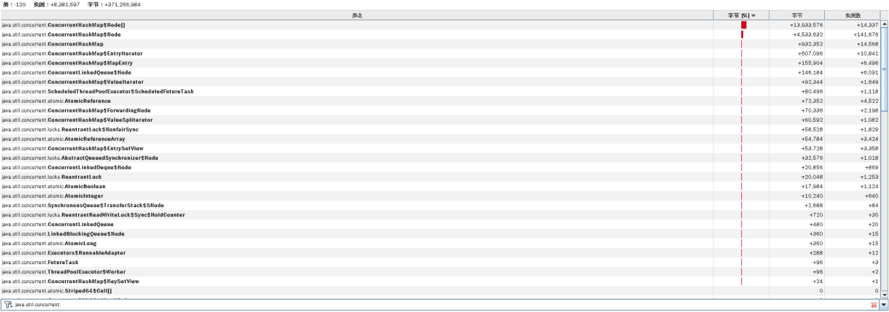

- 00 开篇词 打破四大认知局限，进阶高级性能工程师.md.html
- 01 性能工程：为什么很多性能测试人员无法对性能结果负责？.md.html
- 02 关键概念：性能指标和场景的确定.md.html
- 03 核心分析逻辑：所有的性能分析，靠这七步都能搞定.md.html
- 04 如何构建性能分析决策树和查找瓶颈证据链？.md.html
- 05 性能方案：你的方案是否还停留在形式上？.md.html
- 06 如何抽取出符合真实业务场景的业务模型？.md.html
- 07 性能场景的数据到底应该做成什么样子？.md.html
- 08 并发、在线和TPS到底是什么关系？.md.html
- 09 如何设计全局和定向监控策略？.md.html
- 10 设计基准场景需要注意哪些关键点？.md.html
- 11 打开首页之一：一个案例，带你搞懂基础硬件设施的性能问题.md.html
- 12 打开首页之二：如何平衡利用硬件资源？.md.html
- 13 用户登录：怎么判断线程中的Block原因？.md.html
- 14 用户信息查询：如何解决网络软中断瓶颈问题？.md.html
- 15 查询商品：资源不足有哪些性能表现？.md.html
- 16 商品加入购物车：SQL优化和压力工具中的参数分析.md.html
- 17 查询购物车：为什么铺底参数一定要符合真实业务特性？.md.html
- 18 购物车信息确定订单：为什么动态参数化逻辑非常重要？.md.html
- 19 生成订单信息之一：应用JDBC池优化和内存溢出分析.md.html
- 20 生成订单信息之二：业务逻辑复杂，怎么做性能优化？.md.html
- 21 支付前查询订单列表：如何分析优化一个固定的技术组件？.md.html
- 22 支付订单信息：如何高效解决for循环产生的内存溢出？.md.html
- 23 决定容量场景成败的关键因素有哪些？.md.html
- 24 容量场景之一：索引优化和Kubernetes资源分配不均衡怎么办？.md.html
- 25 容量场景之二：缓存对性能会有什么样的影响？.md.html
- 26 稳定性场景之一：怎样搞定业务积累量产生的瓶颈问题？.md.html
- 27 稳定性场景之二：怎样搞定磁盘不足产生的瓶颈问题？.md.html
- 28 如何确定异常场景的范围和设计逻辑？.md.html
- 29 异常场景：如何模拟不同组件层级的异常？.md.html
- 30 如何确定生产系统配置？.md.html
- 31 怎么写出有价值的性能报告？.md.html
- 我们这个课程的系统是怎么搭建起来的？.md.html
- 结束语 做真正的性能项目.md.html
- 捐赠
17 查询购物车：为什么铺底参数一定要符合真实业务特性？
你好，我是高楼。
今天我们来看看查询购物车接口。
到现在为止，这是我们分析的第六个接口了。不过，我希望你能明白，我们分析每个接口，并不是为了搞清楚这个接口本身的逻辑，而是通过不同接口的基准测试，来分析不同的性能问题，争取给你带来更多的分析案例。
现在很多人在性能场景执行过程中，仍然会问出“当铺底数据不符合生产环境时，该怎么办”这样的疑问，其实答案也挺简单，那就是模拟不出生产环境中的问题。
所以，在这节课中，你将看到当铺底数据不合理时，会对TPS产生什么样具体的影响。由此，你会进一步理解为什么我一直在跟你强调铺底数据要符合生产环境逻辑。
此外，我们还会分析另一个问题，这个问题可能会让你看着比较郁闷，你会发现我们分析了很久，逻辑看似非常合理，但是结果并不如人意。面对这样的情况，那我们该怎么处理呢？这里留个悬念，我们直接开始今天的分析。
压力数据
对于查询购物车这个接口，还是一样，我们先来看第一次运行的性能场景结果。这是一个一开始就足以让人心碎的性能数据：

你看，线程数在增加的过程中，TPS只达到40，而响应时间从一开始就不断地增加。
这可怎么办呢？根据我们RESAR性能分析逻辑，第一步仍然是看架构图，接着是拆分响应时间。因为响应时间在不断增加，所以我们想要拆分响应时间非常容易。
架构图
在拆分响应时间之前，我们看一下架构图。在这一步，你只需要把架构图记个大概就行了。因为后面还要反复回来看多次。

第一阶段分析
拆分响应时间
我们反反复复在讲，做性能分析的时候，首先就是拆分时间。
别人在问我问题的时候，经常会这样描述：TPS不高，响应时间长，瓶颈在哪呢？一看到这种问题，我通常会反问：响应时间长在哪呢？然后，经典的对话结束语就出现了——我不知道呀。我也很想帮助对方解决问题，但是，对于这样的描述，我根本无从下手。
一个做性能的人，怎么能只描述响应时间长呢？你至少要告诉别人慢在哪里。这就是为什么我一直在强调要画架构图。因为有了图，才有拆分时间的手段，这样一来，我们自然就不会盲目，除非你啥都没有。
在拆分时间的时候，你还要注意一点，要找准时间段。根据我的经验，一般是看响应时间的趋势，如果一直都长的话，倒是简单，看哪一段响应时间都行。要是有的时候长，有的时候短，那你就要注意了，在拆分响应时间的时候，要注意把监控工具中的时间段选择好。
在这里，我们选择SkyWalking时间段：2021-01-02 13:53:00 - 2021-01-02 13:54:00。具体拆分时间如下：
- User - Gateway：

- Gateway：
- Gateway - Cart：

- Cart：
- Cart - MySQL：

通过上面抓取的数据，你明显可以看到，是购物车服务Cart那一段的响应时间长。
我们要注意，有些数据抓取工具由于工具本身的问题，会存在不小的数据偏差，比如说对于上面的SkyWalking时间段，我们看到Gateway - Cart之间的服务端平均响应时间是829.25。但是，在Cart上却是984.50。同样的一段时间，这里就出现了一些偏差。
在每一个监控工具上，都或多或少存在性能数据偏差，就比如docker stats，我简直是不想看。所以，我们有时候要结合多个工具来对比数据。
定向监控分析
拆分完响应时间后，我们不再从全局分析开始，而是直接跳到了定向监控。因为对于查询购物车这个接口，我们已经知道Cart服务是慢的，所以，我们就直接进去查看对应的慢的方法在哪里。
这个接口的调用方法如下所示：
/**
* 根据会员id查询购物车数据
*
* @param memberId 会员id
* @return
*/
@Override
public List<OmsCartItem> list(Long memberId) {
if (memberId == null) {
return null;
}
OmsCartItemExample example = new OmsCartItemExample();
example.createCriteria().andDeleteStatusEqualTo(0).andMemberIdEqualTo(memberId);
return cartItemMapper.selectByExample(example);
}
通过上面的代码，我们知道了方法名，那我们直接用Arthas来Trace这个接口就好了，命令如下：
trace com.dunshan.mall.cart.service.imp.CartItemServiceImpl list -v -n 5 --skipJDKMethod false '1==1'
于是，我们得到了如下的信息：
[arthas@1]$ trace com.dunshan.mall.cart.service.imp.CartItemServiceImpl list -v -n 5 --skipJDKMethod false '1==1'
Condition express: 1==1 , result: true
`---ts=2021-01-02 14:59:53;thread_name=http-nio-8086-exec-556;id=10808;is_daemon=true;priority=5;TCCL=org.springframework.boot.web.embedded.tomcat.TomcatEmbeddedWebappClassLoader@18c26588
`---[999.018045ms] com.dunshan.mall.cart.service.imp.CartItemServiceImpl$$EnhancerBySpringCGLIB$$e110d1ef:list()
`---[998.970849ms] org.springframework.cglib.proxy.MethodInterceptor:intercept() #57
Condition express: 1==1 , result: true
`---ts=2021-01-02 14:59:54;thread_name=http-nio-8086-exec-513;id=107d3;is_daemon=true;priority=5;TCCL=org.springframework.boot.web.embedded.tomcat.TomcatEmbeddedWebappClassLoader@18c26588
`---[1095.593933ms] com.dunshan.mall.cart.service.imp.CartItemServiceImpl$$EnhancerBySpringCGLIB$$e110d1ef:list()
`---[1095.502983ms] org.springframework.cglib.proxy.MethodInterceptor:intercept() #57
Condition express: 1==1 , result: true
`---ts=2021-01-02 14:59:53;thread_name=http-nio-8086-exec-505;id=1078b;is_daemon=true;priority=5;TCCL=org.springframework.boot.web.embedded.tomcat.TomcatEmbeddedWebappClassLoader@18c26588
`---[2059.097767ms] com.dunshan.mall.cart.service.imp.CartItemServiceImpl$$EnhancerBySpringCGLIB$$e110d1ef:list()
`---[2059.013275ms] org.springframework.cglib.proxy.MethodInterceptor:intercept() #57
Condition express: 1==1 , result: true
`---ts=2021-01-02 14:59:54;thread_name=http-nio-8086-exec-541;id=107f6;is_daemon=true;priority=5;TCCL=org.springframework.boot.web.embedded.tomcat.TomcatEmbeddedWebappClassLoader@18c26588
`---[1499.559298ms] com.dunshan.mall.cart.service.imp.CartItemServiceImpl$$EnhancerBySpringCGLIB$$e110d1ef:list()
`---[1499.498896ms] org.springframework.cglib.proxy.MethodInterceptor:intercept() #
通过上面的数据可以看到list()的响应时间确实是长了，但是这个接口并不复杂，就是一个select语句而已。对应的select语句的Mapper内容如下：
<select id="selectByExample" parameterType="com.dunshan.mall.model.OmsCartItemExample" resultMap="BaseResultMap">
select
<if test="distinct">
distinct
</if>
<include refid="Base_Column_List" />
from oms_cart_item
<if test="_parameter != null">
<include refid="Example_Where_Clause" />
</if>
<if test="orderByClause != null">
order by ${orderByClause}
</if>
</select>
这个Mapper对应到数据库中，具体的SQL就是：
SELECT id, product_id, product_sku_id, member_id, quantity, price, product_pic, product_name, product_sub_title, product_sku_code, member_nickname, create_date, modify_date, delete_status, product_category_id, product_brand, product_sn, product_attr FROM oms_cart_item WHERE ( delete_status = 0 AND member_id = 597427 )
既然是一个select语句消耗的时间长，那我们就到数据库里，根据相应的SQL来看对应表的数据直方图。命令如下：
select member_id,count(*) from oms_cart_item_202101021530 GROUP BY 1 ORDER BY 2 DESC;
结果如下，我们截取了直方图的部分数据：
从上述数据库中的数据来看，一个会员ID的下面已经加了不少数据。虽然select是通过会员ID查的，但是没做分页处理。这是最简单直接的SQL问题了，分析过程也非常简单。当我们一看到SQL时间长的时候，就要查看一下执行计划：
既然上面的type值是ALL，说明走的是全表扫描，那我们就要根据SQL中的where条件来确定一下要创建什么索引；如果where条件中的查询结果是多条结果，并且数据较多，那就需要做分页。分析到这里，其实也比较容易想到对应的解决方案，有两个动作要做：
- 创建索引：创建索引是为了查询的时候可以精准查询。
- 做分页：是为了避免返回到前端的数据太多。
优化效果
我们虽然讲的是“优化效果”，但，准确来说只是“验证效果”。因为上面的两个动作都是为了提高SQL的查询效果，确切来说就为了减少查询出来的数据。那我们现在就直接把数据给降下来，来验证我们的判断是不是正确。
为了验证我们的分析过程是正确的，这里我先直接把表给TRUNCATE掉，先看看响应时间能不能上来。如果能上来，那就是这里的问题了。
可如果不是呢？那我们只能回到角落默默流泪了。这么简单的问题都找不到，我不是一个合格的性能分析人员。
不管怎么说，来，我们看下结果：

可以看到，TPS一下子上升了很多，在场景不间断的情况下，这个比对如此喜人。看来，我还能继续干这一行。
不过，我们的分析到这里并没有结束，屋漏偏逢连夜雨，我在接着做压力的过程中，又出现了状况，这让我们不得不进入第二个阶段的分析。
第二阶段分析
到底又出现了什么问题呢？具体情况如下：

What? 那是TPS曲线吗？那是掉下来了吗？掉的还这么多吗？同样是场景不间断啊。我的职业生涯难道要就此断送了吗？
这个问题有点复杂。但是从响应时间曲线上看，明显是响应时间增加了，TPS下来了。既然这样，仍然走我们拆分响应时间的思路就好了，这里不再赘述。
通过拆分时间，我们知道响应时间长的问题出在了Gateway上。下面我们就根据RESAR性能分析逻辑，老老实实开始分析。
全局监控分析
我们从系统级的资源上可以明显看到，所有的worker节点都无压力。

我们再从Pod角度来看一下：

你看，有些Pod消耗的CPU已经达到了100%。我把所有的Pod排个序，结果如下：

虽然我们看到了像node_exporter、ES相关的Pod资源都用得不低，但是这些CPU使用率高的节点Pod的资源也都限制了。同时，你要注意，这个资源占用率高的Pod中并没有我们的应用节点，也就是说我们应用节点的CPU资源并没有用完。
我本来想去看一下在这段时间内，应用所在的worker上的内存消耗具体是怎样的。但是，在这段时间内却没了数据：

你看，中间的数据已经断掉了，node_exporter已经不传数了。没有办法，我们只有放弃看 worker上的内存消耗了。
既然如此，那我们先查一下Gateway在哪个worker上，同时也来看一下这个worker上有多少Pod。走这一步是因为在整个Kubernetes中，所有的namespace都用worker主机的资源。所以，从资源使用的角度来看，我们要考虑到所有命名空间中的Pod。
所有namespace在应用节点上的所有Pod如下：
- 先查询gateway所在的worker节点名
[root@k8s-master-2 ~]# kubectl get pods --all-namespaces -o wide | grep gateway
default gateway-mall-gateway-6567c8b49c-pc7rf 1/1 Running 0 15h 10.100.140.2 k8s-worker-2 <none> <none>
- 再查询对应worker上的所有POD
[root@k8s-master-2 ~]# kubectl get pods --all-namespaces -o wide | grep k8s-worker-2
default elasticsearch-client-1 1/1 Running 4 20d 10.100.140.28 k8s-worker-2 <none> <none>
default elasticsearch-data-2 1/1 Running 0 4d2h 10.100.140.35 k8s-worker-2 <none> <none>
default elasticsearch-master-2 1/1 Running 4 20d 10.100.140.30 k8s-worker-2 <none> <none>
default gateway-mall-gateway-6567c8b49c-pc7rf 1/1 Running 0 15h 10.100.140.2 k8s-worker-2 <none> <none>
kube-system calico-node-rlhcc 1/1 Running 0 2d5h 172.16.106.149 k8s-worker-2 <none> <none>
kube-system coredns-59c898cd69-sfd9w 1/1 Running 4 36d 10.100.140.31 k8s-worker-2 <none> <none>
kube-system kube-proxy-l8xf9 1/1 Running 6 36d 172.16.106.149 k8s-worker-2 <none> <none>
monitoring node-exporter-mjsmp 2/2 Running 0 4d17h 172.16.106.149 k8s-worker-2 <none> <none>
nginx-ingress nginx-ingress-nbhqc 1/1 Running 0 5d19h 10.100.140.34 k8s-worker-2 <none> <none>
[root@k8s-master-2 ~]#
从上面的结果可以看到，我们的worker节点上有9个Pod。
不过我们一开始看全局资源信息的时候，并没有发现整个worker节点的资源使用率很高。这是因为我们已经在Pod里限制了资源。所以我们列一下每个Pod的资源限制：
对于那些其他资源占用不高的Pod，我们就不看了。
既然资源有限制，那我们还要把目光转回到Gateway上面来。
定向监控分析
通过查看链路时间，我们也能知道是Gateway上消耗的时间较长：

但是，这个sendRequest是干嘛的？不知道。
那我们就做一个试验，看看跳过Gateway之后的TPS是多少。：

可见，走Gateway，TPS只能有400多；不走Gateway，TPS能达到800多。所以，问题确实出在了Gateway上。
看到这里，有一个环节我们是缺失的，那就是查看Kubernetes容器里的Java进程的健康状态。因为我们在前面查了worker，也查了worker上的Pod，所以现在就到了第三层，也就是Pod中的Java应用。
对此，你也不用有负担，你想想对于一个Java应用来说，能有个啥？无非就是堆、栈一顿看。来，我们打印个Gateway的栈看一下。
从栈上，啥也没看出来，整个状态似乎都挺合理的。 注意，在这里我不是只看一个截图哦，我已经把整个栈都撸了一遍。由于CPU也不高，我们在分析栈的时候，主要看一下有没有锁等待。从上图可以看到，并没有锁，等待也都合理。
看完栈之后，接下来该看堆了。我们得想尽办法，把Kubernetes的Java进程堆拿出来看看：

看到没！如此规则的关联关系：TPS和Gateway的GC趋势是完全一致的。
不过，这样看还是不够具体，我们还需要更细的数据。所以，我们进去看一下GC状态：
[root@gateway-mall-gateway-6567c8b49c-pc7rf /]# jstat -gcutil 1 1000 1000
S0 S1 E O M CCS YGC YGCT FGC FGCT GCT
0.00 55.45 45.33 52.96 94.74 92.77 38427 1953.428 94 113.940 2067.368
57.16 0.00 26.86 53.24 94.74 92.77 38428 1954.006 94 113.940 2067.946
0.00 54.30 15.07 53.65 94.74 92.77 38429 1954.110 94 113.940 2068.050
39.28 0.00 18.39 53.84 94.74 92.77 38430 1954.495 94 113.940 2068.435
39.28 0.00 81.36 53.84 94.74 92.77 38430 1954.495 94 113.940 2068.435
0.00 26.13 68.79 53.84 94.74 92.77 38431 1954.597 94 113.940 2068.537
39.18 0.00 59.75 53.84 94.74 92.77 38432 1954.683 94 113.940 2068.624
0.00 24.70 76.28 53.84 94.74 92.77 38433 1954.794 94 113.940 2068.734
你看，一次YGC大概需要100ms，一秒一次YGC，这样YGC就占了10%左右，这个时间有点多了。
既然YGC消耗CPU较高，那我们就考虑优化Java参数。先来看一下Java参数：
[root@gateway-mall-gateway-6567c8b49c-pc7rf /]# jinfo -flags 1
Attaching to process ID 1, please wait...
Debugger attached successfully.
Server compiler detected.
JVM version is 25.242-b08
Non-default VM flags: -XX:CICompilerCount=2 -XX:InitialHeapSize=262144000 -XX:+ManagementServer -XX:MaxHeapSize=4164943872 -XX:MaxNewSize=1388314624 -XX:MinHeapDeltaBytes=196608 -XX:NewSize=87359488 -XX:OldSize=174784512 -XX:+UseCompressedClassPointers -XX:+UseCompressedOops
Command line: -Dapp.id=svc-mall-gateway -javaagent:/opt/skywalking/agent/skywalking-agent.jar -Dskywalking.agent.service_name=svc-mall-gateway -Dskywalking.collector.backend_service=skywalking-oap:11800 -Dcom.sun.management.jmxremote -Dcom.sun.management.jmxremote.authenticate=false -Dcom.sun.management.jmxremote.ssl=false -Dcom.sun.management.jmxremote.port=1100 -Dcom.sun.management.jmxremote.rmi.port=1100 -Djava.rmi.server.hostname=localhost -Dspring.profiles.active=prod -Djava.security.egd=file:/dev/./urandom
[root@gateway-mall-gateway-6567c8b49c-pc7rf /]#
从上面的参数中就可以看到，我在Kubernetes的Java进程中并没有配置GC回收相关的参数。所以，这里我们加上相关的参数。
在下面的参数中，我加了PrintGC相关的参数以及ParNew参数：
[root@gateway-mall-gateway-6c6f486786-mnd6j /]# jinfo -flags 1
Attaching to process ID 1, please wait...
Debugger attached successfully.
Server compiler detected.
JVM version is 25.261-b12
Non-default VM flags: -XX:CICompilerCount=2 -XX:CompressedClassSpaceSize=1065353216 -XX:+HeapDumpOnOutOfMemoryError -XX:InitialHeapSize=2147483648 -XX:+ManagementServer -XX:MaxHeapSize=2147483648 -XX:MaxMetaspaceSize=1073741824 -XX:MaxNewSize=1073741824 -XX:MetaspaceSize=1073741824 -XX:MinHeapDeltaBytes=196608 -XX:NewSize=1073741824 -XX:OldSize=1073741824 -XX:ParallelGCThreads=6 -XX:+PrintGC -XX:+PrintGCApplicationConcurrentTime -XX:+PrintGCApplicationStoppedTime -XX:+PrintGCDateStamps -XX:+PrintGCDetails -XX:+PrintGCTimeStamps -XX:+PrintTenuringDistribution -XX:+UseCompressedClassPointers -XX:+UseCompressedOops -XX:+UseParNewGC
Command line: -Dapp.id=svc-mall-gateway -javaagent:/opt/skywalking/agent/skywalking-agent.jar -Dskywalking.agent.service_name=svc-mall-gateway -Dskywalking.collector.backend_service=skywalking-oap:11800 -Dcom.sun.management.jmxremote -Dcom.sun.management.jmxremote.authenticate=false -Dcom.sun.management.jmxremote.ssl=false -Dcom.sun.management.jmxremote.port=1100 -Dcom.sun.management.jmxremote.rmi.port=1100 -Djava.rmi.server.hostname=localhost -Xms2g -Xmx2g -XX:MetaspaceSize=1g -XX:MaxMetaspaceSize=1g -Xmn1g -XX:+UseParNewGC -XX:ParallelGCThreads=6 -XX:+HeapDumpOnOutOfMemoryError -XX:+PrintGCDetails -XX:+PrintGCDateStamps -XX:+PrintTenuringDistribution -XX:+PrintGCApplicationStoppedTime -XX:+PrintGCApplicationConcurrentTime -XX:+PrintGCDetails -Xloggc:gc.log -Dspring.profiles.active=prod -Djava.security.egd=file:/dev/./urandom
[root@gateway-mall-gateway-6c6f486786-mnd6j /]#
本来指望ParNew能有啥用，然而并没有什么用。
既然加参数不是能很快见效的，那我们就得看一下YGC的时候回收了什么，然后再来决定从哪里下手收拾Java进程内存的消耗问题。所以，我们打印一下jmap histo信息，来看一下对象消耗内存的变化，如下所示：
[root@gateway-mall-gateway-6c6f486786-mnd6j /]# jmap -histo 1 | head -20
num #instances #bytes class name
----------------------------------------------
1: 2010270 124874960 [C
2: 787127 91014984 [I
3: 601333 42467920 [Ljava.lang.Object;
4: 1534551 36829224 java.lang.String
5: 420603 31107504 [B
6: 21891 21972896 [Ljava.util.concurrent.ConcurrentHashMap$Node;
7: 186170 11914880 java.util.regex.Matcher
8: 228807 10982736 java.util.StringTokenizer
9: 291025 9312800 java.util.concurrent.ConcurrentHashMap$Node
10: 274253 8804936 [Ljava.lang.String;
11: 179524 8617152 org.springframework.web.util.pattern.PathPattern$MatchingContext
12: 210473 8418920 java.util.LinkedHashMap$Entry
13: 154562 6182480 io.netty.handler.codec.DefaultHeaders$HeaderEntry
14: 191349 6123168 java.util.LinkedList
15: 126218 6058464 java.util.TreeMap
16: 68528 6030464 java.lang.reflect.Method
17: 98411 5363408 [Ljava.util.HashMap$Node;
[root@gateway-mall-gateway-6c6f486786-mnd6j /]#
在这里，我们需要把这个命令多执行几次，看看对象消耗内存的变化。前面我们看到YGC过于频繁，但是从内存上来看，对象的内存回收得挺好。
所以，对于这种YGC很高，但从对象内存的消耗又看不出什么有效信息的问题，只有一种可能，那就是对象创建得快，销毁也快。那么，我们只有一个地方可以准确查找对象内存的消耗了，那就是对象的delta。我们连上JvisualVM，看下内存对象delta变量：

（注：这张图上的字之所以这么小，是因为我连的是远程Windows桌面，分辨率不高，实在没有办法。不过，你要是仔细看的话，还是能看到最上面那个HashMap。）
我比较喜欢用这种视图来看delta值。从这里可以看到，增加和销毁都很快。
在前面我们加了打印GC log的参数，所以我们把GC log拿出来分析一下，得到结果如下：


从上面的分析来看，主要是YGC在消耗响应时间。这与我们前面的分析吻合，但是我们仍旧没有找到具体的问题点。
在这个问题的分析过程中，我不断在做应用的修改、重启等动作。结果，没想到性能问题没解决，又遇到了两个其他问题，特地记录在这里。
之所以记录这样的问题，是想告诉你：在我们的分析过程中，什么样的问题都有可能存在。而我们虽说是做性能分析的人，但也不是只分析性能问题，而是见到问题就要去解决，要不然，你就走不下去。
支线问题一
我在查找宿主机日志时发现如下信息：
[3594300.447892] ACPI Exception: AE_AML_BUFFER_LIMIT, Evaluating _PMM (20130517/power_meter-339)
[3594360.439864] ACPI Error: SMBus/IPMI/GenericSerialBus write requires Buffer of length 66, found length 32 (20130517/exfield-389)
[3594360.439874] ACPI Error: Method parse/execution failed [\_SB_.PMI0._PMM] (Node ffff8801749b05f0), AE_AML_BUFFER_LIMIT (20130517/psparse-536)
从错误信息来看，这是一个ACPI缓存区大小的问题。这个缓存大小在BIOS和内核之间没有协商一致，也就是说请求的缓存区大小是66字节，而给的却是32字节。所以，电源监控的管理模块就报了异常。
这是缺少内核模块引起的，因为这个内核模块在我所用的这个内核版本中不会自动更新。对应的解决方法倒也简单：
echo "blacklist acpi_power_meter" >> /etc/modprobe.d/hwmon.conf
modprobe ipmi_si
modprobe acpi_ipmi
其中，第一条命令是为了不让这个错误再次出现。当然了，这不是解决问题，只是不想看到这个报错而心里烦燥。后面两条命令是手动加载模块，但前提是你要更新内核版本。
支线问题二
再回到我们分析的主线上，前面提到一个Java的YGC消耗的CPU比较高，但是业务逻辑又没有什么问题。所以，我尝试换一个最简单的Demo程序，先来测试一下整个集体是不是正常的。这个Demo程序没有任何业务逻辑，只返回247B的示例程序。
我简单说明一下，我之所以把这个测试过程放在这个支线问题中来描述，是想让我的行为更加有条理。
在这个测试过程中，我执行了两次。上图的前半部分走了Ingress，后面没有走Ingress，可是后面TPS并没有掉下来。这时，问题就基本清楚了。
我这里列个表格梳理一下到现在看到的信息，理理思路。
从以上数据可以判断出，TPS掉下来和Ingress有绝对的关系。那我们就来看看Ingress的日志：
root@nginx-ingress-m9htx:/var/log/nginx# ls -lrt
total 0
lrwxrwxrwx 1 root root 12 Sep 10 2019 stream-access.log -> /proc/1/fd/1
lrwxrwxrwx 1 root root 12 Sep 10 2019 error.log -> /proc/1/fd/2
lrwxrwxrwx 1 root root 12 Sep 10 2019 access.log -> /proc/1/fd/1
root@nginx-ingress-m9htx:/proc/1/fd# ls -lrt
total 0
lrwx------ 1 root root 64 Jan 7 18:00 7 -> 'socket:[211552647]'
lrwx------ 1 root root 64 Jan 7 18:00 4 -> 'anon_inode:[eventpoll]'
lrwx------ 1 root root 64 Jan 7 18:00 3 -> 'socket:[211552615]'
l-wx------ 1 root root 64 Jan 7 18:00 2 -> 'pipe:[211548854]'
l-wx------ 1 root root 64 Jan 7 18:00 1 -> 'pipe:[211548853]'
lrwx------ 1 root root 64 Jan 7 18:00 0 -> /dev/null
root@nginx-ingress-m9htx:/proc/1/fd# find ./ -inum 212815739
root@nginx-ingress-m9htx:/proc/1/fd# find ./ -inum 212815740
悲怆的感觉！你看，日志直接重定向到标准输出和标准错误了，而标准输出和标准错误默认都是屏幕。那我们就到Kubernetes管理工具中去追踪日志。可是，结果是啥也没有。唉，这可怎么办呢？
从下面这张图我们也可以看到，当压力经过这个Ingress时，报错是必然的，压力越大，报错越多。

可是分析到这里，我们再没有其他可以分析的日志了。没什么办法，只能查一下Ingress的版本了，结果发现，当前的Ingress已经有了新的版本。
为了避免去踩Ingress本身存在的一些坑，我把它的版本从1.5.5换到1.9.1之后，得到如下结果：
你看图中没有报错了，看来那些错误是Ingress版本导致的。
然而，即便如此，我们还是没有解决TPS会掉的问题。你可能会说，上面这张图里的TPS不是没有掉吗？其实，这只是假象。在上面的场景中，我们只是为了验证Ingress的问题，所以，执行时间并不长。
请你注意，我们到这里并没有解决前面所说的TPS会掉的问题。应该说，我们这里可能有两个问题，一个是Ingress，而另一个可能是在其他地方，但是我们还没有去验证。因此，我们要回到主线上，继续来分析它。
回到主线
经过一翻折腾，你是不是感觉脑袋已经晕了？当我们被一些技术细节深深拖进去的时候，一定要保持清醒。
根据我的经验，这个时候我们可以在纸上画一下架构图。并不是说前面已经有架构图，我们就不用画了。画架构图是为了帮我们梳理思路。并且我们还要画得再细一点：
经过梳理，我采用分段测法来判断问题与哪一层相关：因为Cart服务需要通过外部调用走网关，那我在这里直接调用Cart服务，不走网关。并且我也跳过Ingress，直接用NodePort来提供服务，看看TPS有没有调下来。
首先，我直接从cart服务的NodePort压进去，得到这样的结果：

也就是说，Cart服务本身就会导致TPS降下来，看起来也并不规律。
那我们就修改Tomcat参数，把线程数、连接数调大，再来一次。你可能奇怪，为什么要这样调呢？这是因为在查看应用线程健康状态的过程中，我注意到Spring Boot里的Tomcat线程很忙。
在我这样反复验证了几次之后，发现TPS并没有掉下去。
为了进一步验证TPS和上面的线程数、连接数等参数有关，我又特意把配置改回去，再看是不是Tomcat参数的问题。
结果，TPS掉下去的情况没有复现！

气得我不得不吃份麻辣烫发泄一下。本来我已经看到了TPS掉下来和GC有关。并且，我们在GC中经过一顿分析发现，Servlet的hashmap$node在快速地创建和回收，说明YGC消耗资源多和压力大小有关，所以调了Tomcat相关的参数。可是，现在在同样的压力下，问题竟然不能复现，也真是醉了。
像这种随机的问题是比较难整的。不知道TPS稳定的假象是不是和中间有过重启有关。话说重启大法，在技术领域中真是绝对的大招。
既然这个问题没有复现，现场也没有了，我们也只能放弃。
虽然针对这个问题，我们从前到后的分析逻辑都非常合理，但是仍然没有找到问题点在哪里。如果它是一个随机的问题，那就是我们没有在合适的时机抓到问题的原因。
对于一个项目来说，如果出现的随机问题对业务造成的影响是不能接受的，那我们就必须花大精力去解决。如果影响不大，那也可以先放一放。但是每一个问题都有出现的必然性，也就是说，那些看似随机的问题，其实在技术中都有着绝对的必然性。
那这个问题到底是什么呢？在这里，我先留一个悬念，因为再继续分析下去，我们这节课就太长了，你看着也很累。下节课我们接着分析。
总结
在这节课中，我们讲了两个阶段的性能分析。
第一个阶段比较简单，就是一个查询的问题。对于查询来说，在实时交易的过程中，最好能够精准查找。如果出现范围查询，那就必须要有分页。
不过，如果是大范围的查询，那不仅会对网络造成压力，同时还会对应用、数据库等各层都产生非常明显的压力。所以，在出现范围查询时，我们必须做好技术选型。当业务必须做这样的范围查询时，你可以考虑换组件，像大数据这样的思路就可以用起来了。
第二个阶段有点麻烦，虽然我们花了很多时间精力，但是到最后没有找到根本原因。不过，我们分析的方向和思路都是没有问题的。
对于这种看似很随机的问题，在实际的项目中也经常出现。我们分析到最后可能会发现这是一个非常简单的问题，让人气得直跺脚。至于这个问题的根本原因是什么，我们下节课再做说明。
无论如何，在这节课中，我们仍然把分析的逻辑描述完整了，希望能给到你一些完整的思路。
课后作业
最后，请你思考一下：
- 在实时交易中，如何快速判断数据库的数据量所引发的性能问题？定向分析的证据链是什么？
- 如何从CPU使用高定位到GC效率引发的性能问题？
记得在留言区和我讨论、交流你的想法，每一次思考都会让你更进一步。
如果你读完这篇文章有所收获，也欢迎你分享给你的朋友，共同学习进步。我们下这节课再见！
© 2019 - 2023 Liangliang Lee. Powered by gin and hexo-theme-book.